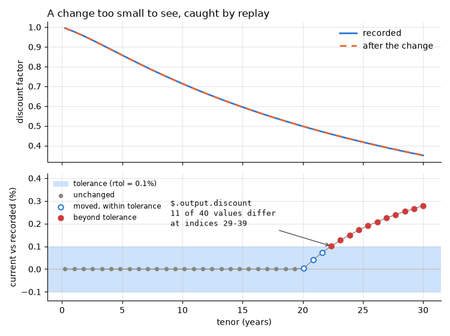

Note
Go to the end to download the full example code.
replay : catching a regression¶
This page records a baseline, changes the code behind the recorded function, and reads
the failure replay reports.
The change is deliberately not in the decorated function itself - it is in a helper it calls, which is what a real regression usually looks like: something underneath changed and the function on top now answers differently. And it is small: too small to see on a plot, which is exactly when a test has to see it for you.
Setup: where records go¶
The code under test reads its store from the REGRESSION_RECORDS_STORE environment
variable when it is imported, so the variable is set first
(record_func : recording a first call says why).
import os
import tempfile
from pathlib import Path
# In a project: REGRESSION_RECORDS_STORE=tests/regression_data in a .env file, loaded
# with python-dotenv's load_dotenv(). Here: a fresh temporary directory, empty each run.
STORE = Path(tempfile.mkdtemp(prefix="regression-records-"))
os.environ["REGRESSION_RECORDS_STORE"] = str(STORE)
print("store:", STORE)
store: /tmp/regression-records-ep96oe4l
Setup: the code under test¶
Replay imports a recorded function by module and name, so the code under test lives in
a module, curves, imported from regression_records._examples - support code
that ships with the package so that a page can import real code rather than define it
in a cell (record_func : recording a first call says more). In
your project, this is your own package. Its source, printed below:
discount_curve is recorded; zero_rate is the helper beneath it: a smooth,
upward-sloping curve of continuously compounded rates.
import inspect
from regression_records._examples import curves
print(inspect.getsource(curves))
"""A discount curve, for the gallery page ``02_catching_a_regression``."""
from __future__ import annotations
import os
import numpy as np
from regression_records import record_func
# Where records go is configuration, set by whoever runs this code; never set here.
STORE = os.environ["REGRESSION_RECORDS_STORE"]
def zero_rate(tenor: np.ndarray) -> np.ndarray:
"""Return the zero rate for each tenor, in years: 2% short, 3.5% long."""
return 0.02 + 0.015 * (1 - np.exp(-tenor / 4))
@record_func(STORE)
def discount_curve(tenors: list[float]) -> dict:
"""Return the tenors, their zero rates and their discount factors."""
t = np.asarray(tenors, dtype=float)
zero = zero_rate(t)
return {"tenors": t, "zero": zero, "discount": np.exp(-zero * t)}
Record a baseline¶
Recording is off unless switched on; this page switches it on for the whole script. Two calls give two records: a 40-point curve out to 30 years, and a short one.
import numpy as np
from regression_records import ToleranceConfig, disable, enable, replay
enable()
TENORS = np.linspace(0.25, 30.0, 40)
baseline = curves.discount_curve(TENORS)
curves.discount_curve([1.0, 2.0, 5.0])
print("records:", sorted(p.name for p in STORE.rglob("rec-*.json")))
records: ['rec-5e45ce728847311f-933f0398.json', 'rec-8280763365148c5e-e45ded4d.json']
That is the baseline. Recording goes off again, so that calling the changed code below, to plot it, records nothing new.
disable()
Change the code¶
A plausible-looking refactor: hold the zero rate flat beyond 20 years, as many curve
builders do. Assigning it over the module’s zero_rate stands in for editing
curves.py; the finally puts the original back.
Floats are compared within a tolerance, set on replay and never on the decorator. Here it is a relative 0.1% (ToleranceConfig : replaying within tolerances covers tolerances in full).
original_zero_rate = curves.zero_rate
def flat_beyond_20y(tenor: np.ndarray) -> np.ndarray:
return original_zero_rate(np.minimum(tenor, 20.0))
TOLERANCE = ToleranceConfig(rtol=1e-3)
curves.zero_rate = flat_beyond_20y
try:
current = curves.discount_curve(TENORS)
report = replay(STORE, tolerance=TOLERANCE)
finally:
curves.zero_rate = original_zero_rate
print(report.counts())
assert not report.passed
assert report.counts()["differs"] == 1, "the long curve moved; the short one did not"
{'passed': 1, 'differs': 1, 'raised': 0, 'not_importable': 0, 'not_replayable': 0, 'not_loadable': 0}
Reading one case¶
report.failures holds the cases that did not pass. Each carries its
ComparisonResult, which collects every difference rather than stopping at the
first, so one failure tells you everything that moved.
case = report.failures[0]
for diff in case.comparison.diffs:
print(f"{diff.kind} at {diff.path}")
print(f" {diff.message}")
print(f" {diff.tolerance_used}")
value_mismatch at $.output.discount
11 of 40 element(s) differ beyond tolerance at index/indices: 29, 30, 31, 32, 33, 34, 35, 36, 37, 38, 39
ToleranceInfo(rtol=0.001, atol=0.0, max_abs_diff=0.0009755419696003131)
value_mismatch at $.output.zero
11 of 40 element(s) differ beyond tolerance at index/indices: 29, 30, 31, 32, 33, 34, 35, 36, 37, 38, 39
ToleranceInfo(rtol=0.001, atol=0.0, max_abs_diff=9.277293943406317e-05)
Two arrays moved, $.output.zero and $.output.discount, each reported by
position rather than by dumping two arrays at you. $.output.tenors is not
mentioned at all, because it did not change: only differences are reported.
The $ path grammar is public: $.output for the return value,
$.state_before / $.state_after for a method’s object, .key for a mapping
entry or attribute, [0] for a sequence element, ['price'] for a dataframe
column. Those same strings key ToleranceConfig.path_overrides.
What the report saw¶
The two curves are indistinguishable by eye. Plotting the relative difference against the tolerance shows what replay measured: the curve moved from 20 years on, the first few changed points stayed inside the 0.1% band, and every point beyond it is one the report names.
import matplotlib.pyplot as plt
diff = next(d for d in case.comparison.diffs if d.path == "$.output.discount")
recorded, fresh = baseline["discount"], current["discount"]
relative = fresh / recorded - 1
breach = ~np.isclose(fresh, recorded, rtol=TOLERANCE.rtol, atol=TOLERANCE.atol)
moved = ~np.isclose(fresh, recorded, rtol=1e-12, atol=0.0) & ~breach
# The figure and the report agree on what failed.
assert diff.message.startswith(f"{breach.sum()} of {breach.size} element(s)")
assert ", ".join(map(str, np.flatnonzero(breach))) in diff.message
fig, (top, bottom) = plt.subplots(
2, 1, figsize=(7.5, 5.6), sharex=True, height_ratios=[1.1, 1.0]
)
top.plot(TENORS, recorded, color="#2a78d6", lw=2, label="recorded")
top.plot(TENORS, fresh, color="#eb6834", lw=2, ls=(0, (4, 3)), label="after the change")
top.set_ylabel("discount factor")
top.legend(loc="upper right")
top.set_title("A change too small to see, caught by replay", loc="left")
band = TOLERANCE.rtol * 100
bottom.axhspan(-band, band, color="#cde2fb", label="tolerance (rtol = 0.1%)")
bottom.axhline(0, color="#c3c2b7", lw=1)
bottom.plot(TENORS, relative * 100, color="#898781", lw=1)
bottom.scatter(
TENORS[~(breach | moved)],
relative[~(breach | moved)] * 100,
s=18,
color="#898781",
zorder=3,
label="unchanged",
)
bottom.scatter(
TENORS[moved],
relative[moved] * 100,
s=36,
facecolor="white",
edgecolor="#2a78d6",
lw=1.5,
zorder=3,
label="moved, within tolerance",
)
bottom.scatter(
TENORS[breach],
relative[breach] * 100,
s=40,
color="#d03b3b",
zorder=3,
label="beyond tolerance",
)
first = np.flatnonzero(breach)[0]
bottom.annotate(
f"{diff.path}\n{breach.sum()} of {breach.size} values differ\n"
f"at indices {first}-{breach.size - 1}",
xy=(TENORS[first], relative[first] * 100),
xytext=(9.0, 0.19),
fontsize=9.5,
family="monospace",
color="#0b0b0b",
arrowprops={"arrowstyle": "->", "color": "#52514e"},
)
bottom.set_ylabel("current vs recorded (%)")
bottom.set_xlabel("tenor (years)")
bottom.legend(loc="upper left", fontsize=8.5)
bottom.set_ylim(-0.14, 0.42)
fig.tight_layout()

The same, as text¶
case.describe() is that case as one readable block: the status, the function, the
record it replayed, and the diffs. report.summary() is the counts followed by one
such block per failure - the message to put in an assertion.
print(case.describe())
print()
print(report.summary(max_diffs=1))
differs: regression_records._examples.curves:discount_curve record e45ded4d (regression_records/_examples/curves/discount_curve/records/rec-8280763365148c5e-e45ded4d.json)
comparison failed with 2 diff(s):
at '$.output.discount' (value_mismatch): 11 of 40 element(s) differ beyond tolerance at index/indices: 29, 30, 31, 32, 33, 34, 35, 36, 37, 38, 39
at '$.output.zero' (value_mismatch): 11 of 40 element(s) differ beyond tolerance at index/indices: 29, 30, 31, 32, 33, 34, 35, 36, 37, 38, 39
replayed 2 record(s) from /tmp/regression-records-ep96oe4l: 1 passed, 1 differs
differs: regression_records._examples.curves:discount_curve record e45ded4d (regression_records/_examples/curves/discount_curve/records/rec-8280763365148c5e-e45ded4d.json)
comparison failed with 2 diff(s):
at '$.output.discount' (value_mismatch): 11 of 40 element(s) differ beyond tolerance at index/indices: 29, 30, 31, 32, 33, 34, 35, 36, 37, 38, 39
... and 1 more
code_drift is False: discount_curve’s own source did not change, only the
helper beneath it. Code drift tracks the recorded function’s source alone, so a
regression like this one is caught by the values, never by the hash.
assert not any(c.code_drift for c in report.cases)
Nothing was overwritten¶
Replay only reads. With the original zero_rate back in place, the baseline
replays clean again.
Next: ToleranceConfig : replaying within tolerances - how close is close enough.
Total running time of the script: (0 minutes 0.230 seconds)